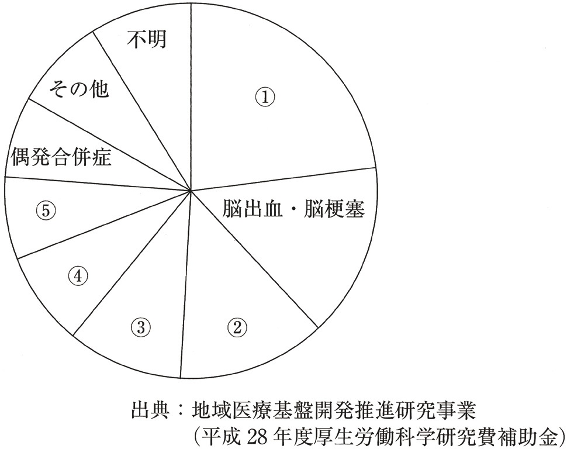

| 選択肢 | 解説 |
|---|---|
| ａ 身体発育状況 | 誤り＝含まれる。身長・体重などの身体発育状況はすべての乳幼児健診に共通する基本項目である。 |
| ｂ 言語障害の有無 | 誤り＝含まれる。3歳児健診は言葉の発達を評価できる時期にあたり、言語障害の有無は精神発達の評価と並ぶ重要項目である。 |
| ｃ 歯の異常の有無 | 誤り＝含まれる。3歳前後は乳歯が生えそろう時期で、歯及び口腔の疾病及び異常の有無（む歯の有無を含む）が診査される。 |
| ◯ ｄ 胸部エックス線撮影 | ◯ 正しい＝含まれない。3歳児健診の項目は問診・診察・計測が中心で、被曝を伴うエックス線撮影は含まれない。胸部エックス線撮影が制度として行われるのは結核対策としての定期健康診断（学校・職場）であり、乳幼児を対象とする母子保健の健診項目には無い。 |
| ｅ 予防接種の実施状況 | 誤り＝含まれる。予防接種の実施状況の確認は、未接種のワクチンを見つけて接種を促す機会として健診の役割の1つである。 |
| 選択肢 | 解説 |
|---|---|
| ａ 出産翌日から4週間 | 誤り。4週間という期間は産後休業には存在しない。育児休業などと混同した数字で、産後休業は8週間で固定されている。 |
| ◯ ｂ 出産翌日から8週間 | ◯ 正しい。産後休業は出産日の翌日から8週間と労働基準法65条2項に規定される。起算点は「出産日の翌日」であり、産前休業の起算点である「分娩予定日」とは異なる——産前は予定を基準に休業を始め、産後は実際に生まれた日を基準に休業日数を数える。 |
| ｃ 出産翌日から1年間 | 誤り。1年間は育児休業（子が1歳の誕生日を迎えるまで）の期間で、産後休業とは別の制度・別の根拠法（育児介護休業法）である。 |
| ｄ 分娩予定日翌日から4週間 | 誤り。起算点（分娩予定日）・期間（4週間）のいずれも産後休業と一致しない。分娩予定日を基準にするのは産前休業（予定日の6週間前から）である。 |
| ｅ 分娩予定日翌日から8週間 | 誤り。期間の8週間は正しいが、起算点が違う。産後休業は「実際に出産した日」の翌日から数えるのであって、予定日どおりに生まれるとは限らない以上、予定日を起算点にはできない。 |
| 産前休業 | 産後休業 | |
|---|---|---|
| 根拠 | 労働基準法65条1項 | 労働基準法65条2項 |
| 起算点 | 分娩予定日 | 出産日翌日 |
| 期間 | 単胎6週間／多胎14週間 | 8週間 |
| 権利か義務か | 本人の請求で取得（義務ではない） | 最初の6週間は強制（義務）／残り2週間は本人請求＋医師の許可 |
| 選択肢 | 解説 |
|---|---|
| ａ 母子保健法に基づく。 | 誤り。人工妊娠中絶の根拠法は母体保護法であって母子保健法ではない。母子保健法が扱うのは健診・母子健康手帳・未熟児医療といった「行政サービス」であり、中絶のような身体への医的侵襲を伴う行為の要件を定めるのは母体保護法の役割——法律名が似ているため取り違えやすい最頻出の誤りである。 |
| ｂ 胎児異常も中絶の適応である。 | 誤り。日本の母体保護法に胎児側の異常を理由とする中絶（いわゆる胎児条項）は存在しない。法が認める適応は①妊娠の継続又は分娩が身体的又は経済的理由により母体の健康を著しく害するおそれのあるものと②暴行若しくは脅迫によって又は抵抗若しくは拒絶することができない間に姦淫されて妊娠したものの2つに限られ、いずれも「母体」側の事情であって胎児の疾患・異常は要件に含まれない。 |
| ◯ ｃ 年間10万件以上実施されている。 | ◯ 正しい。我が国の人工妊娠中絶の実施件数は年間10万件を超える水準で推移している。ピークだった昭和30年代前半（年間100万件超）からは大きく減少したが、近年もなお年間10万件台という規模を保っており、「稀な医療行為」ではない——出生数が年々減少する一方で、中絶は依然として一定数存在するというギャップ自体が公衆衛生上の論点になる。 |
| ｄ 本人の同意のみで実施可能である。 | 誤り。母体保護法上、人工妊娠中絶には本人及び配偶者の同意が原則として必要である。ただし配偶者が知れないとき、意思を表示できないとき、妊娠後に配偶者が死亡したとき、事実婚が破綻しているとき、性暴力等により妊娠した場合で配偶者の同意取得が困難なときは本人の同意だけで足りる——「本人の同意のみで足りる」が原則であるかのように断定すると誤りになる。 |
| ｅ 経口中絶薬はすべての医師が処方できる。 | 誤り。経口中絶薬（メフィーゴパック）を処方できるのは母体保護法指定医に限られる。しかも入院可能な有床施設、または緊急時に搬送可能な体制を整えた医療機関でのみ使用が認められ、「経口薬だから外来の一般医でも扱える」わけではない——手術による中絶と同じ資格要件・体制要件がかかる。 |
| 母子保健法 | 母体保護法 | |
|---|---|---|
| 性格 | 行政サービス（健診・手帳・届出） | 医的侵襲行為の適法化要件 |
| 代表的な規定 | 健康診査・母子健康手帳・養育医療・低出生体重児の届出 | 人工妊娠中絶・不妊手術 |
| 実施者の資格 | 特に限定なし（市町村事業） | 母体保護法指定医に限定 |
| 選択肢 | 解説 |
|---|---|
| ａ 定期予防接種 | 誤り。定期予防接種の根拠は予防接種法である。対象疾病・接種年齢・健康被害救済といった予防接種の枠組みは母子保健法ではなく予防接種法が一手に規定する。 |
| ｂ 児童虐待に係る通告 | 誤り。児童虐待を発見した者の通告義務は児童虐待の防止等に関する法律（児童虐待防止法）に規定される。母子保健法の健診等で虐待の兆候に気づく場面はあっても、通告義務そのものの根拠は児童虐待防止法（および児童福祉法）である。 |
| ｃ 人工妊娠中絶の要件 | 誤り。人工妊娠中絶の要件は母体保護法に規定される（NO.319で確認したとおり）。「母子」という語の類似で母子保健法と混同しやすい典型例である。 |
| ◯ ｄ 低出生体重児の届出 | ◯ 正しい。低出生体重児（出生時体重2,500g未満）を出産した場合、保護者は速やかにその旨を市町村に届け出なければならないと母子保健法18条に規定されている。この届出を起点に、市町村の保健師による未熟児訪問指導や、必要に応じた未熟児養育医療（入院医療費の公費負担）につながる——「届出→訪問指導→養育医療」という支援の連鎖の入口にあたる。 |
| ｅ 就学時健康診断の実施 | 誤り。就学時健康診断の根拠は学校保健安全法である。対象は就学予定の児童であり、母子保健法が対象とする「乳幼児・妊産婦」の枠組みからは外れる。 |
| 選択肢 | 解説 |
|---|---|
| ａ 1％ | 誤り。実際の割合はこれより明確に高い。1％という数字は「ごく稀な例外」の水準であり、晩婚化・晩産化が進んだ現在の出生動向を反映していない。 |
| ◯ ｂ 6％ | ◯ 正しい。母体年齢40歳以上の出生は、年間総出生数の約6％前後を占める。これは10歳代の出生割合とほぼ同水準であり、「高齢出産は稀な例外ではなく、一定のまとまった割合を占めている」という晩産化の実態を示す数字である。 |
| ｃ 16％ | 誤り。16％は過大評価。この水準は30〜34歳や25〜29歳といった出産の中心的な年齢層の割合に近く、40歳以上に当てはめると実態から大きく外れる。 |
| ｄ 26％ | 誤り。26％は最も出生の多い年齢層（30〜34歳前後）の割合に相当する数字であり、40歳以上の割合としては過大である。 |
| ｅ 36％ | 誤り。36％は出生数が最多となる年齢層（30〜34歳）の割合に近い数字で、40歳以上にこの数字を当てはめると実態と大きく乖離する。 |
| 選択肢 | 解説 |
|---|---|
| ａ 十代の飲酒率 | 誤り＝指標に含まれる。十代の飲酒率は喫煙率と並び「思春期の健康課題」領域の代表的な指標である。 |
| ｂ 妊婦の喫煙率 | 誤り＝指標に含まれる。妊婦の喫煙率は早産・低出生体重児のリスク因子として「妊娠期・乳幼児期の健康水準」領域の主要指標である。 |
| ｃ 低出生体重児の割合 | 誤り＝指標に含まれる。低出生体重児の割合は妊婦の喫煙・栄養状態・多胎妊娠の増加などを反映する代表的な母子保健指標である。 |
| ◯ ｄ 中高生の1日のゲームの使用時間 | ◯ 正しい＝指標に含まれない。健やか親子21（第2次）の指標体系は飲酒・喫煙・むし歯・自殺・虐待・産後うつなど具体的な健康課題を中心に構成され、「ゲームの使用時間」という項目は指標として設定されていない。スマートフォン・ゲームへの依存傾向は近年の社会的関心事ではあるが、健やか親子21（第2次）の公式指標としては採用されていない。 |
| ｅ 積極的に育児をしている父親の割合 | 誤り＝指標に含まれる。父親の育児参加は「子育てを支える地域・家庭の環境づくり」領域の指標の1つである。 |
| 選択肢 | 解説 |
|---|---|
| ａ 産前休業は請求すればいつでも取得できる。 | 誤り。産前休業を請求できるのは分娩予定日の6週間前（多胎妊娠は14週間前）からであり、「いつでも」ではない。妊娠がわかった初期の時点で請求しても、6週間前という起算点より前は労働基準法上の産前休業として認められない（妊娠初期のつわり等への配慮は母性健康管理指導事項連絡カード等、別の枠組みで対応する）。 |
| ◯ ｂ 産後休業は出産日翌日から8週間取得できる。 | ◯ 正しい。産後休業は出産日の翌日から8週間（労働基準法65条2項）——NO.318で確認した内容そのものである。 |
| ◯ ｃ 育児休業は子供が1歳の誕生日まで取得できる。 | ◯ 正しい。育児休業は子が1歳に達するまで（育児介護休業法5条）取得できる、産後休業とは別の制度である。産後休業（8週間）が終わった後、引き続き育児休業へ切れ目なく移行できるのが通常の流れ。 |
| ｄ 育児休業は子供が3歳になるまで延長できる。 | 誤り。育児休業の延長の上限は2歳までである。保育所に入所できないなどの特別な事情があれば1歳6か月まで、それでも入所できなければ最長2歳まで延長できるが、3歳までの延長は制度上存在しない——「3歳児健診」の3歳と数字を混同しやすい誤りの型。 |
| ◯ ｅ 育児休業は配偶者も取得することができる。 | ◯ 正しい。育児休業は父母どちらも取得できる（性別を問わない）制度である。両親がともに育児休業を取得する場合、「パパ・ママ育休プラス」により対象期間が子が1歳2か月に達するまで延長される特例もある。 |
| 休業 | 根拠法 | 期間・対象 |
|---|---|---|
| 産前休業 | 労働基準法 | 予定日6週間前（多胎14週間前）〜、請求により、母のみ |
| 産後休業 | 労働基準法 | 出産日翌日から8週間（最初の6週間は強制）、母のみ |
| 育児休業 | 育児介護休業法 | 原則1歳まで（延長で最長2歳まで）、父母とも取得可 |
| 選択肢 | 解説 |
|---|---|
| ａ 保健センターへの連絡を勧める。 | 誤り。本症例の主訴は妊娠に伴うつわりと、立ち仕事の負担を軽減したいという就労上の相談であり、保健センターへの連絡が直接解決する問題ではない。育児支援や虐待予防など地域保健の相談窓口としての保健センターの役割とは場面がずれている。 |
| ｂ 勤務先へ診療情報提供書を送付する。 | 誤り。診療情報提供書は医療機関同士の情報共有が主用途で、雇用主への直接送付は個人情報の観点からも通常の対応ではない。勤務先へ配慮を求める正規のルートは母性健康管理指導事項連絡カードという専用の様式が用意されている。 |
| ｃ 産前休業を申請するように指示する。 | 誤り。妊娠8週の時点は産前休業（分娩予定日6週間前から）の対象期間に遠く及ばない。本症例が求めているのは休業そのものではなく「勤務時間を短くしたい」という就業上の配慮であり、休業の話にすり替えるのは症例の訴えと噛み合わない。 |
| ◯ ｄ 母性健康管理指導事項連絡カードを発行する。 | ◯ 正しい。妊娠中の症状等に対応するための事業主への申し出手段として母性健康管理指導事項連絡カード（男女雇用機会均等法に基づく）を発行するのが適切である。医師・助産師が指導した内容（勤務時間の短縮・休憩・つわりへの配慮など）をカードに記載し、本人が事業主に提出することで、事業主に配慮の努力義務が生じる——まさに本症例（つわり・食欲低下・立ち仕事の負担）に合致する対応。 |
| ｅ 職場へ母子健康手帳を提示するように指示する。 | 誤り。母子健康手帳は妊婦健診・乳幼児健診の記録や母のプロフィールを記載する行政上の手帳であり、事業主への就労配慮を具体的に指示する様式ではない。「妊娠の証明」程度の役割はあっても、勤務時間短縮などの個別の配慮内容を伝える手段としては母性健康管理指導事項連絡カードに劣る。 |
| 選択肢 | 解説 |
|---|---|
| ◯ ａ 児童福祉施設が規定されている。 | ◯ 誤り＝これが正解。次世代育成支援対策推進法そのものに児童福祉施設の設置基準を規定する条文は無い。児童福祉施設（保育所・児童養護施設等）を規定するのは児童福祉法であり、次世代育成支援対策推進法は自治体・企業の「行動計画の策定」を軸とする法律である——対象は「施設そのもの」ではなく「支援の計画」という違い。 |
| ｂ 国民は子育て支援に協力する責務を負っている。 | 誤りではない＝正しい記述。同法は国民の責務として子育て支援に協力するよう努めることを規定している。 |
| ｃ 子どもが健やかに生まれ、育成されることを目的とする。 | 誤りではない＝正しい記述。同法の目的規定（1条）は次代の社会を担う子どもが健やかに生まれ、育成される環境の整備を掲げる。 |
| ｄ 国及び地方公共団体は子育て支援を推進する責務を負っている。 | 誤りではない＝正しい記述。国・地方公共団体の責務として子育て支援対策を推進することが定められている。 |
| ｅ 従業員数が100人を超える事業主は次世代育成行動計画を策定する。 | 誤りではない＝正しい記述。従業員101人以上の事業主には行動計画の策定・届出が義務、100人以下は努力義務とされる。 |
| 選択肢 | 解説 |
|---|---|
| ａ 乳児死亡とは生後1年未満の死亡である。 | 誤りではない＝正しい記述。乳児死亡は生後1年未満（0歳）の死亡と定義される。 |
| ｂ 新生児死亡とは生後4週未満の死亡である。 | 誤りではない＝正しい記述。新生児死亡は生後4週（28日）未満の死亡で、乳児死亡の一部に含まれる。 |
| ｃ 死産とは妊娠12週以後の死児の出産である。 | 誤りではない＝正しい記述。死産は妊娠満12週（第4月）以後の死児の出産と定義される（死産の届出に関する規定）。 |
| ｄ 早期新生児死亡とは生後1週未満の死亡である。 | 誤りではない＝正しい記述。早期新生児死亡は生後1週（7日）未満の死亡で、新生児死亡のうちさらに早い時期を指す。 |
| ◯ ｅ 周産期死亡とはすべての死産に早期新生児死亡を加えたものである。 | ◯ 誤り＝これが正解。周産期死亡に算入される死産は妊娠満22週以後の死産に限られ、「すべての死産（妊娠12週以後）」ではない。周産期死亡＝妊娠満22週以後の死産＋早期新生児死亡（生後1週未満の死亡）という定義であり、妊娠12週以後22週未満の死産は死産統計には入るが周産期死亡には含まれない——「死産の定義」と「周産期死亡に算入される死産の範囲」がずれている点が本問の核心。 |
| 用語 | 範囲 | 備考 |
|---|---|---|
| 死産 | 妊娠満12週以後の死児の出産 | 死産統計全体の基準 |
| 周産期死亡 | 妊娠満22週以後の死産＋早期新生児死亡 | 死産の基準（22週）が死産統計（12週）より狭い |
| 早期新生児死亡 | 生後1週未満 | 新生児死亡の内数 |
| 新生児死亡 | 生後4週未満 | 乳児死亡の内数 |
| 乳児死亡 | 生後1年未満 | 最も広い区分 |
| 選択肢 | 解説 |
|---|---|
| ａ 8 | 誤り。妊娠8週はまだ死産の定義（妊娠満12週以後）に達していない。この時期の妊娠終了（流産）に死産届の提出義務は生じない。 |
| ◯ ｂ 12 | ◯ 正しい。死産届が必要になるのは妊娠満12週（第4月）以後の死児の出産——NO.326で確認した「死産」の定義そのものである。妊娠12週未満での妊娠終了（早期流産）は届出の対象にならないが、12週を境に「死産」として扱われ、死産届の提出（および火葬・埋葬の許可）が必要になる。 |
| ｃ 16 | 誤り。16週は死産の定義（12週）より遅い週数で、基準として採用されていない。 |
| ｄ 20 | 誤り。20週は周産期死亡に算入される死産の基準（22週）とも死産の定義（12週）とも一致しない、紛らわしい中間の数字。 |
| ｅ 24 | 誤り。24週は死産・周産期死亡いずれの基準週数（12週・22週）とも一致しない。 |
| 選択肢 | 解説 |
|---|---|
| ａ 「産後12週間は就業できません」 | 誤り。産後の就業制限は原則8週間であり、12週間という数字は制度上存在しない。育児休業（子が1歳まで）と産後休業（8週間）を混ぜてできた誤った数字と考えられる。 |
| ◯ ｂ 「請求すれば産前6週間の休業が可能です」 | ◯ 正しい。単胎妊娠の産前休業は分娩予定日の6週間前から、本人が請求すれば取得できる（NO.323・324で確認した内容と同一）。 |
| ｃ 「勤務先の要請に従って働くことを勧めます」 | 誤り。産前休業は本人の権利であり、勤務先の人員不足を理由に取得を諦めさせる方向で説明するのは不適切である。法律が本人に与えている選択権を、医療者が勤務先の都合を優先するよう誘導してはならない。 |
| ◯ ｄ 「産後、男女ともに育児休業の取得が可能です」 | ◯ 正しい。育児休業は父母どちらも取得可能で、性別を理由に制限されない（NO.323で確認済み）。本症例は夫婦共働きであり、父親側の育児休業取得という選択肢も説明すべき事項である。 |
| ◯ ｅ 「産前・産後の休業中は解雇されることはありません」 | ◯ 正しい。労働基準法19条は産前産後の休業期間及びその後30日間の解雇を禁止している。妊娠・出産・産休取得等を理由とする不利益取扱いは男女雇用機会均等法でも禁止されており、「休業を理由に解雇される不安」を持つ患者に対して正確に安心材料を伝えることは重要な説明である。 |
| 制度 | 根拠 | 内容 |
|---|---|---|
| 解雇制限 | 労働基準法19条 | 産前産後の休業期間＋その後30日間は解雇禁止 |
| 不利益取扱いの禁止 | 男女雇用機会均等法 | 妊娠・出産・産休取得等を理由とする降格・減給等の禁止 |
| 選択肢 | 解説 |
|---|---|
| ａ 人工授精 | 誤り。人工授精は生殖補助医療の一種で、母体保護法の対象行為ではなく、母体保護法指定医の資格を必要としない。母体保護法が資格を限定するのは「妊娠している母体を侵襲的に処置する行為」であり、妊娠成立前の人工授精はそもそも対象外である。 |
| ｂ 体外受精 | 誤り。体外受精も人工授精と同様、妊娠成立前の生殖補助医療にあたり、母体保護法の対象外で指定医の資格は不要である。 |
| ｃ 不妊手術 | 誤り。不妊手術は母体保護法3条に規定される行為だが、実施者を母体保護法指定医に限定する条文は無い。同法3条は「医師は、本人及び配偶者の同意を得て、不妊手術を行うことができる」と定めるのみで、指定医であることは要件になっていない——「母体保護法に載っている行為＝指定医が必要」と早合点すると外す典型例。 |
| ｄ 出生前診断 | 誤り。出生前診断（絨毛検査・羊水検査・母体血清マーカー・非侵襲的出生前遺伝学的検査など）は検査行為であり、そもそも母体保護法の規定する処置に含まれず、指定医の資格を必要としない。産婦人科専門医であれば実施・説明が可能である。 |
| ◯ ｅ 人工妊娠中絶 | ◯ 正しい。母体保護法14条は「都道府県医師会の指定する医師（指定医師）は、本人及び配偶者の同意を得て、人工妊娠中絶を行うことができる」と定め、実施者を母体保護法指定医に明確に限定している。中絶は身体への侵襲が大きく、実施の適否（週数・適応事由）を慎重に判断できる医師に限るという趣旨である。 |
| 不妊手術（3条） | 人工妊娠中絶（14条） | |
|---|---|---|
| 実施者 | 医師（限定なし） | 母体保護法指定医のみ |
| 同意 | 本人及び配偶者 | 本人及び配偶者（原則） |
| 週数制限 | 特になし | 妊娠22週未満 |
| 選択肢 | 解説 |
|---|---|
| ａ 健康増進法 | 誤り。健康増進法は国民の健康づくり・生活習慣病対策を目的とする法律で、就労中の妊婦の休業を規定するものではない。 |
| ｂ 母子保健法 | 誤り。母子保健法は健診・母子健康手帳・養育医療といった行政サービスを規定する法律であり、休業の取得そのものは規定しない（NO.319・320で確認したとおり）。 |
| ｃ 母体保護法 | 誤り。母体保護法は人工妊娠中絶・不妊手術という侵襲的な医療行為の要件を定める法律で、就労の休業とは無関係である。 |
| ◯ ｄ 労働基準法 | ◯ 正しい。妊娠33週6日は単胎妊娠の産前休業の対象期間（分娩予定日の6週間前以降）にあたり、産前休業は労働基準法65条1項に規定される。本症例は分娩予定日が妊娠40週0日とすればあと約6週で、産前休業の請求ができる時期にちょうど入っている——症例が求めているのは「産前休業の申請」そのものである。 |
| ｅ 次世代育成支援対策推進法 | 誤り。次世代育成支援対策推進法は国・地方公共団体・事業主の行動計画の策定を規定する法律で、個々の労働者の休業取得を直接規定するものではない（NO.325で確認したとおり）。 |
| 法律 | 守備範囲 |
|---|---|
| 母子保健法 | 健診・母子健康手帳・養育医療・低出生体重児届出 |
| 母体保護法 | 人工妊娠中絶・不妊手術 |
| 労働基準法 | 産前産後休業・解雇制限 |
| 育児介護休業法 | 育児休業・介護休業 |
| 男女雇用機会均等法 | 母性健康管理指導事項連絡カード・不利益取扱いの禁止 |
| 次世代育成支援対策推進法 | 事業主・自治体の行動計画 |
| 健康増進法 | 国民の生活習慣病対策・受動喫煙防止 |

| 選択肢 | 解説 |
|---|---|
| ａ 感染症 | 誤り。感染症は妊産婦死亡の原因の中では頻度の低い部類に位置づけられる。円グラフでは②〜⑤の中でも後方（頻度が低い方）に割り当てられる原因である。 |
| ｂ 肺血栓塞栓症 | 誤り。肺血栓塞栓症（静脈血栓塞栓症）は妊産婦死亡の原因として一定数を占めるが、①（円グラフで脳出血・脳梗塞に次ぐ規模）ほどの頻度ではない。 |
| ◯ ｃ 産科危機的出血 | ◯ 正しい。①は円グラフの中で最大の割合を占めるセクターで、産科危機的出血（分娩時大量出血）にあたる。大量出血は分娩後の弛緩出血・癒着胎盤・子宮破裂などから急激に進行し、対応が遅れると短時間で致死的になる——妊産婦死亡の原因別頻度で最も高い割合を占め続けているのが産科危機的出血である。 |
| ｄ 心・大血管疾患 | 誤り。心・大血管疾患は妊娠による心臓への負荷増大で生じる死因だが、①ほどの最大シェアではない。 |
| ｅ 心肺虚脱型羊水塞栓症 | 誤り。心肺虚脱型羊水塞栓症は劇的な経過をたどる重篤な病態だが、頻度としては①（産科危機的出血）や脳出血・脳梗塞ほど高くない。 |
| 選択肢 | 解説 |
|---|---|
| ａ 尿検査 | 法律上の3歳児健診の必須項目一覧（身体発育状況・栄養状態・脊柱及び胸郭の疾病及び異常の有無・皮膚の疾病の有無・歯及び口腔の疾病及び異常の有無・四肢運動障害の有無・精神発達の状況・言語障害の有無・予防接種の実施状況・育児上の問題点・その他の疾病及び異常の有無）には尿検査という文言は明記されていないが、実務上は多くの市町村で糖・蛋白の尿検査を併せて実施している——「法律の条文上の項目」と「実際の運用」がずれることが採点除外の一因と考えられる。 |
| ｂ 血圧測定 | 尿検査と同様、血圧測定は法律上の必須項目一覧には明記されていない。3歳という年齢で高血圧をスクリーニングする臨床的意義自体が乳幼児健診の主目的（発達・先天異常・生活習慣の芽の把握）とはやや性格が異なるため、標準項目には含めない整理が一般的である。 |
| ｃ 歯科検診 | 法律上の必須項目である「歯及び口腔の疾病及び異常の有無」に相当し、内容としては正しい。3歳前後は乳歯が生えそろう時期で、むし歯の早期発見が主眼となる。 |
| ｄ 言語障害の有無 | 法律上の必須項目である「言語障害の有無」そのものであり、内容としては正しい。3歳は言葉の発達を評価しやすい時期であることはNO.317でも確認した。 |
| ｅ 予防接種の実施状況 | 法律上の必須項目である「予防接種の実施状況」そのものであり、内容としては正しい。未接種のワクチンを見つけて接種を促す機会としての役割もNO.317のとおり。 |
| 選択肢 | 解説 |
|---|---|
| ａ 周産期死亡率 | 誤り。周産期死亡率は健やか親子21（第1次）の期間を通じて改善（低下）傾向にあり、悪化した指標ではない。 |
| ◯ ｂ 10代の自殺率 | ◯ 正しい。健やか親子21（第1次）の最終評価（平成25年）で、10代の自殺率は目標設定当時よりも悪化したと評価された数少ない指標の1つである。思春期のメンタルヘルス対策の難しさを象徴する結果として、第2次で「学童期・思春期から成人期に向けた保健対策」が重点課題として引き継がれる契機になった。 |
| ｃ むし歯のない3歳児の割合 | 誤り。むし歯のない3歳児の割合は改善（上昇）傾向にあり、悪化した指標ではない。歯科保健対策の普及により、むし歯を持つ3歳児は着実に減少した。 |
| ｄ 育児期間中の両親の自宅での喫煙率 | 誤り。育児期間中の両親の自宅での喫煙率は改善（低下）傾向にあり、悪化した指標ではない。受動喫煙対策の啓発が進んだ結果である。 |
| ｅ 生後6か月までにBCG接種を終了している者の割合 | 誤り。BCG接種率は制度整備（定期接種化）に伴い改善（上昇）傾向にあり、悪化した指標ではない。 |
| 選択肢 | 解説 |
|---|---|
| ◯ ａ 妊産婦健康診査 | ◯ 正しい。妊産婦健康診査は母子保健法13条に基づき市町村が実施する。母子健康手帳の交付に始まる母子保健法の一連の健診体系（妊産婦健診→1歳6か月児健診→3歳児健診）の起点にあたる。 |
| ◯ ｂ 未熟児養育医療 | ◯ 正しい。未熟児養育医療（未熟児に対する入院医療費の公費負担）は母子保健法20条に基づく——NO.320で確認した「低出生体重児の届出→未熟児訪問指導→養育医療」という支援の連鎖の最後にあたる制度である。 |
| ｃ 乳幼児期の定期予防接種 | 誤り。定期予防接種の根拠は予防接種法である（NO.320で確認したとおり）。母子保健法の健診で接種状況を確認することはあっても、予防接種そのものの実施根拠にはならない。「実施状況の確認」と「実施の根拠」は別の話である。 |
| ｄ 小児慢性特定疾患治療研究事業 | 誤り。小児慢性特定疾病（現行の医療費助成制度）の根拠は児童福祉法である（NO.320で確認したとおり）。「小児」「母子」という言葉の近さで母子保健法と混同しやすい典型例である。 |
| ｅ 児童相談所の設置 | 誤り。児童相談所の設置根拠は児童福祉法である。児童虐待への対応・要保護児童の一時保護等を担う児童相談所は母子保健法ではなく児童福祉の枠組みの機関である。 |
| 法律 | 本章での該当設問 |
|---|---|
| 母子保健法 | NO.317・320・334（健診・届出・養育医療） |
| 母体保護法 | NO.319・329（中絶・不妊手術） |
| 労働基準法 | NO.318・323・328・330（産前産後休業・解雇制限） |
| 育児介護休業法 | NO.323・324・328（育児休業） |
| 男女雇用機会均等法 | NO.324（母性健康管理指導事項連絡カード） |
| 次世代育成支援対策推進法 | NO.325（事業主の行動計画） |
| 児童福祉法 | NO.320・334（小児慢性特定疾病・児童相談所） |
| 選択肢 | 解説 |
|---|---|
| ａ 学歴 | 誤り。母子健康手帳の記載項目に学歴は含まれない。記載項目は内閣府令で定められており、妊婦健診・乳幼児健診の記録や保健・育児に関する情報提供が中心である。 |
| ｂ 所得 | 誤り。母子健康手帳に所得を記載する欄は無い。所得情報は高額療養費や公費負担医療の判定に使われるが、それは医療保険・自治体の別の手続きで確認されるものであり、母子健康手帳の役割ではない。 |
| ｃ 職歴 | 誤り。母子健康手帳に過去の職歴を記載する欄は無い。就労状況が問題になる場面（産前産後休業・母性健康管理指導事項連絡カード等）は職場とのやり取りの中で扱われ、母子健康手帳とは別の書類である。 |
| ｄ 婚姻歴 | 誤り。母子健康手帳に婚姻歴を記載する欄は無い。母子健康手帳は婚姻の有無にかかわらず、妊娠の届出を行った者全員に交付されるものである。 |
| ◯ ｅ 喫煙状況 | ◯ 正しい。母子健康手帳の記載項目には母のプロフィールとして喫煙状況が含まれる。妊娠中の喫煙は低出生体重児・早産のリスク因子であり、健やか親子21（第2次）の指標「妊婦の喫煙率」（NO.322）とも直結する情報として手帳に記録される。 |
| 選択肢 | 解説 |
|---|---|
| ａ 妊産婦死亡は妊娠中から分娩後7日目までの死亡をいう。 | 誤り。妊産婦死亡の定義は妊娠中または妊娠終了後満42日未満の母体の死亡であり、「分娩後7日目まで」という範囲は誤り。7日という数字は早期新生児死亡（生後1週未満）の基準日数と混同したものと考えられる。 |
| ◯ ｂ 産科的合併症で死亡したものを直接産科的死亡という。 | ◯ 正しい。妊産婦死亡は直接産科的死亡（産科的合併症で死亡したもの。産科危機的出血・脳出血等が代表）と間接産科的死亡（妊娠前からの疾病が妊娠のせいで悪化して死亡したもの）に分類される——直接産科的死亡が最も多い（NO.331の円グラフもこの内訳を示すものである）。 |
| ｃ 妊産婦死亡率は1,000出生当たりの数で示す。 | 誤り。妊産婦死亡率は出産10万対で示される稀な事象であり、1,000出生対では示さない。1,000出生対（またはそれに近い分母）で示すのは周産期死亡率・新生児死亡率・乳児死亡率など、より頻度の高い指標である——妊産婦死亡は年間数十人規模ときわめて稀なため、分母を10万まで広げないと意味のある率にならない。 |
| ｄ 肺血栓塞栓症が原因疾患として最も多い。 | 誤り。妊産婦死亡の原因として最も多いのは産科危機的出血であり、肺血栓塞栓症ではない（NO.331で確認済み）。 |
| ｅ 妊産婦死亡数は年間約200人である。 | 誤り。我が国の妊産婦死亡数は年間数十人程度（近年は20〜30人台）であり、約200人という規模ではない。出産数十万件に対して数十人という世界的にも極めて低い水準を維持している。 |
| 指標 | 分母の単位 |
|---|---|
| 妊産婦死亡率 | 出産10万対 |
| 周産期死亡率 | 出産千対 |
| 新生児死亡率・乳児死亡率 | 出生千対 |
| 選択肢 | 解説 |
|---|---|
| ａ 1か月 | 誤り。1か月健診は広く実施されているが、母子保健法が市町村に実施を義務づける法定健診ではない。多くは医療機関が任意で（出産した産科施設等で）実施する健診であり、法律上の実施義務は市町村にはない。 |
| ｂ 4か月 | 誤り。4か月健診も広く行われているが、同様に母子保健法上の実施義務がある法定健診ではない。 |
| ｃ 1歳 | 誤り。1歳児健診という区切りは母子保健法が義務づける健診時期には含まれない。1歳という数字は育児休業の原則の期限と紛らわしいが、健診の話とは別の制度である。 |
| ◯ ｄ 1歳6か月 | ◯ 正しい。1歳6か月児健康診査は母子保健法12条により市町村に実施が義務づけられている法定健診である（NO.317で確認したとおり）。 |
| ◯ ｅ 3歳 | ◯ 正しい。3歳児健康診査も母子保健法12条により市町村に実施が義務づけられている法定健診である（NO.317・332で確認したとおり）。 |